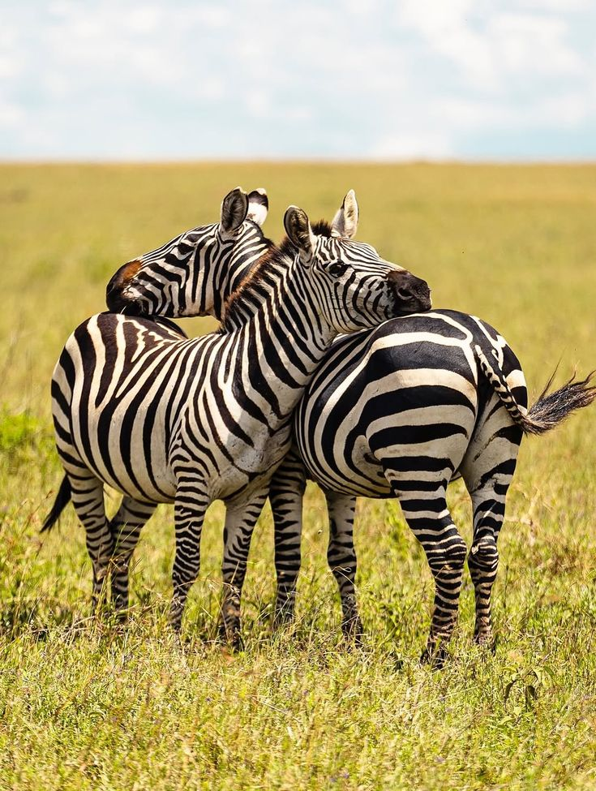

Masai Mara Game Drives
Explore the Mara's open plains in search of lions, elephants, giraffes, buffaloes, cheetahs and other wildlife.
Journey from the legendary plains of the Masai Mara through Kenya's beautiful lakes, rhino conservancies, mountain forests and iconic elephant country before completing your adventure on the Indian Ocean coast.
Discover several sides of Kenya in one carefully planned journey.
This 11-day adventure begins in Nairobi and takes you to the world-famous Masai Mara, where open grasslands support an extraordinary variety of wildlife. Continue to Lake Naivasha for a boat ride and a walking experience on Crescent Island.
Travel north to Ol Pejeta Conservancy for rhino conservation experiences and a visit to the Sweetwaters Chimpanzee Sanctuary. Continue to the Aberdare region before heading south to Amboseli, known for its large elephant herds and views of Mount Kilimanjaro.
The adventure continues through Tsavo West and Tsavo East, with opportunities to explore dramatic landscapes, natural springs and wildlife-rich savannah. The journey ends with a transfer to Mombasa, where you can settle into a coastal hotel.

A varied journey combining wildlife viewing, scenic landscapes, conservation experiences and a relaxing coastal finish.
Explore the Mara's open plains in search of lions, elephants, giraffes, buffaloes, cheetahs and other wildlife.
Enjoy a boat excursion with opportunities to see hippos and fish eagles, followed by a Crescent Island walking safari.
Discover a leading conservation landscape and visit the Sweetwaters Chimpanzee Sanctuary.
Spend a night at a tree hotel overlooking a floodlit waterhole where wildlife may come to drink.
Look out for large elephant herds and enjoy the park's spectacular setting beneath Mount Kilimanjaro.
Explore lava landscapes, Mzima Springs, the Galana River region and the expansive Tsavo wilderness.
Follow the journey from Nairobi to the coast, with each day bringing a different landscape and experience.
Arrive at Jomo Kenyatta International Airport, where you will be met by a Fleypat Adventures representative and transferred to your Nairobi hotel.
After check-in, the rest of the day is available for relaxation following your journey. Depending on your arrival time, you may enjoy some time exploring the city independently.
After breakfast, depart Nairobi and travel towards the Masai Mara, passing through the scenic Great Rift Valley. Stop at a viewpoint to appreciate the dramatic landscape before continuing towards the reserve.
Arrive in time for lunch and check in at Mara Sopa Lodge. In the afternoon, head out for your first game drive, exploring the grasslands in search of the wildlife that makes the Mara one of Africa's celebrated safari destinations.
Spend the day exploring the Masai Mara on game drives. The reserve is known for its abundant wildlife, open savannahs and seasonal wildebeest migration.
Your safari may bring sightings of lions, elephants, cheetahs, giraffes, zebras, buffaloes and many species of antelope. Enjoy time in the wilderness with opportunities to observe and photograph animals in their natural habitat.
Optional activities may include a visit to a Maasai community or a hot-air balloon safari. These experiences are arranged at additional cost and are subject to availability and operating conditions.
After breakfast, leave the Mara and travel towards Lake Naivasha, a beautiful freshwater lake in Kenya's Great Rift Valley.
On arrival, enjoy a boat ride on the lake, with opportunities to observe hippos and fish eagles. Continue to Crescent Island for a guided walking experience among free-roaming wildlife, subject to the area's operating conditions.
Later, transfer to your accommodation and enjoy the peaceful surroundings of Lake Naivasha.
After breakfast, depart for the Ol Pejeta region near Nanyuki, travelling through Kenya's scenic central highlands. Make a stop near the Equator for a memorable photo opportunity.
Continue to Ol Pejeta Conservancy for a wildlife and conservation experience. The conservancy is recognised for its rhino conservation work. You will also visit the Sweetwaters Chimpanzee Sanctuary, which provides a refuge for rescued chimpanzees.
Later, proceed to Sweetwaters Serena Camp for dinner and overnight accommodation.
After breakfast, depart Ol Pejeta and travel towards the Aberdare region. Arrive at Outspan Hotel for lunch before continuing by the property's designated transfer arrangement to your tree hotel.
Settle into your forest accommodation and enjoy the unique experience of observing the surrounding wilderness from the lodge. The floodlit waterhole provides opportunities to watch wildlife visiting to drink, including animals that may be difficult to spot during daytime game drives.
After breakfast, begin the journey south towards Amboseli National Park. The route takes you through the central highlands towards Nairobi and onwards to the Amboseli region.
Enjoy a lunch stop along the journey before continuing to Amboseli. Arrive in the evening, check in at Amboseli Sopa Lodge and settle in after the day's drive.
Enjoy a full day exploring Amboseli National Park. The park is famous for its large elephant herds and beautiful views of Mount Kilimanjaro when weather conditions allow.
Explore the park's open plains, swamps and natural springs, which attract a variety of wildlife. Look out for elephants, zebras, wildebeest, giraffes, buffaloes and numerous bird species.
Return to Amboseli Sopa Lodge after your game-viewing activities.
After breakfast, depart Amboseli and travel to Tsavo West National Park. Enjoy the changing scenery as you enter a landscape of volcanic hills, rugged terrain and open wilderness.
Explore the Shetani Lava Flows, an impressive volcanic landscape formed by ancient lava activity. Continue to Mzima Springs, a natural oasis where clear water rises from underground sources. The area is known for its hippos, fish and other wildlife.
Later, proceed to Ngulia Safari Lodge for dinner and overnight accommodation.
After breakfast, continue your safari towards Tsavo East National Park. Enjoy game viewing along the way as you travel through the expansive Tsavo wilderness.
Explore the park's open landscapes and the area around the Galana River, an important water source for wildlife. Look out for elephants, giraffes, zebras, antelopes, buffaloes and predators that inhabit the region.
Later, check in at Voi Safari Lodge and enjoy the rest of the evening at the lodge.
Enjoy breakfast before departing Tsavo East for the Kenyan coast. Travel towards Mombasa, leaving the savannah landscapes behind as you approach the Indian Ocean region.
On arrival, transfer to your selected beach hotel and check in. Spend the rest of the afternoon relaxing after your safari, enjoying the coastal atmosphere and the beginning of your beach stay.
The itinerary features a selection of safari lodges and properties positioned to support the route.
City hotel on a bed and breakfast basis. The specific property will be confirmed in your quotation.
Mara Sopa Lodge.
Lake Naivasha Sopa Resort.
Sweetwaters Serena Camp.
Tree hotel in the Aberdare region. The specific property and transfer arrangement will be confirmed before booking.
Amboseli Sopa Lodge.
Ngulia Safari Lodge.
Voi Safari Lodge.
Beach hotel selected according to your preferred location, accommodation category and travel dates.
This journey can be quoted according to your travel dates, group size, accommodation preferences and coastal hotel choice.
Contact our team for a detailed quotation based on your preferred travel dates, number of travellers, room arrangements and accommodation requirements.
A few useful points to help you prepare for your Kenya safari.
Let Fleypat Adventures help you plan your journey from the wildlife-rich savannahs to the beautiful Kenyan coast.
Plan My Safari Contact Us